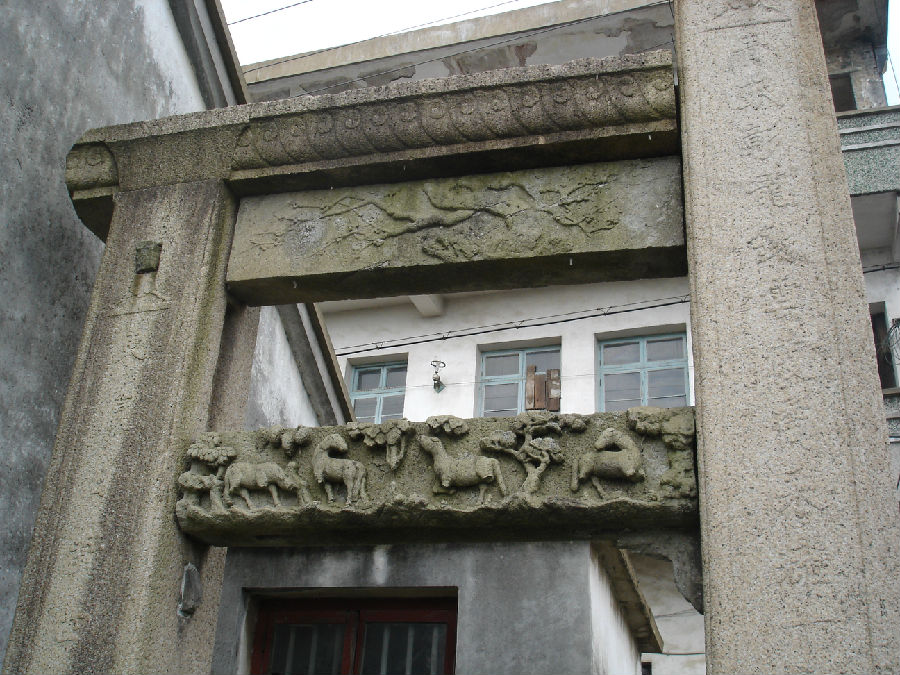

嘉兴市文物保护网 · 市级文物保护点 · 2020-11-09 · 原文

节孝残牌坊位于嘉兴市南湖区凤桥镇新篁社区镇西街154号对面，建于清咸丰八年（1858），牌坊呈东西走向，原为三间，现存南次间，构件包括2根立柱及3根额坊，皆为花岗岩材质，中间石柱高约5米，南石柱高约3.8米，两柱间距2米，石柱东西两面皆刻有字联，其中长石柱刻联为“青珉璋龙云霞商采丁谿州七年志励柏舟聿成模”，短石柱刻联为“东瀛日对四时春，金兰标名垂邑乘”。额坊分别刻有梅花及动物图案，还刻有“咸丰八年”等铭文。残牌坊造型简洁，结构稳重，纹饰精美，是研究嘉兴地区的民俗文化难得的实物，具有一定的历史和艺术价值。2009年公布为嘉兴市文物保护点。